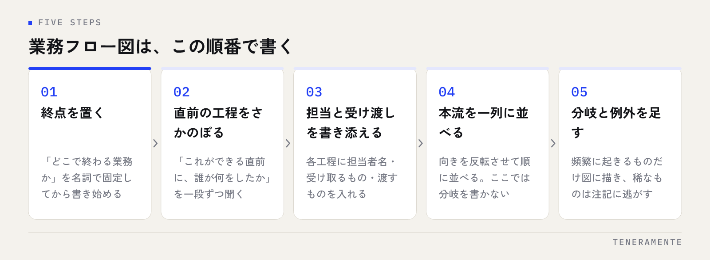

システムを作る前に業務を整理したい。そう考えたときに最初に書くのが業務フロー図です。ただ、記号の種類を調べるところから始めると、たいてい途中で止まります。実際に必要なのは、書く範囲と粒度を先に決めて、決まった順番でたどることだけです。
📌 この記事の結論
業務フロー図は、作図の知識ではなく書く順番で品質が決まります。範囲・粒度・視点の3つを先に決め、終わりから逆にたどって本流だけを一列に並べる。分岐と例外はそのあとに足します。この順番なら、手書きでも1枚にまとまります。
01業務フロー図は「誰が・何を受け取り・何を渡すか」の並び
業務フロー図とは、ある業務が始まってから終わるまでを、担当者と受け渡しの順に並べた図です。難しく考える必要はなく、書くべき情報は3つしかありません。誰がやるか、何を受け取って始めるか、何を渡して終わるか。この3点がすべての工程で埋まっていれば、図として成立します。
マニュアルとは目的が違います。マニュアルは1つの作業を正しくやるための手順書で、読む相手は担当者本人です。フロー図は業務全体のつながりを示すもので、読む相手はその業務を自分ではやらない人です。上司、他部署、そして開発会社が読みます。
だからこそ、フロー図には作業のコツや画面の操作方法を書きません。書くと粒度が崩れ、1枚に収まらなくなります。詳細は別の紙に逃がして、図では流れだけを見せます。
02書き始める前に決める3つのこと
いきなり工程を書き出すと、必ず途中で「どこまで書くべきか」に迷います。先に3つを決めてください。
ひとつめは範囲です。どこから始まって、どこで終わる業務なのかを一文で言い切ります。「受注から請求書の発行まで」のように、始点と終点を名詞で固定します。ここが曖昧だと、図が際限なく広がります。
ふたつめは粒度です。1つの箱に入れる作業の大きさをそろえます。「見積書を作成する」と「テンプレートを開く」が同じ図に並んでいると、読む側は全体像をつかめません。
みっつめは視点です。自部署の中だけを書くのか、お客様や他部署とのやり取りまで含めるのか。システム化を前提にするなら、部署をまたぐ受け渡しは必ず含めてください。無駄が生まれているのは、多くの場合その境目だからです。
| 粒度 | 1つの箱の例 | 向いている用途 |
|---|---|---|
| 粗い | 受注・手配・請求 | 経営層への説明、業務全体の把握 |
| 中くらい | 見積書を作成する／承認を受ける | システム化の相談、改善点の発見 |
| 細かい | テンプレートを開く／単価を入力する | 担当者向けのマニュアル |
システム化の相談に使うなら、中くらいの粒度が扱いやすくなります。1つの箱が「担当者が一度に片付ける単位」になっているかを目安にしてください。
03終わりから逆にたどって洗い出す
工程の洗い出しは、始まりからではなく終わりから逆にたどるほうが漏れません。始まりから書くと、思い出した順に並べてしまい、抜けに気づけないからです。

終点を置いたら、「これができる直前に、誰が何をしましたか」と一段ずつさかのぼります。答える人が詰まったら、そこに受け渡しの境目があります。この問いは自分に向けても使えますし、担当者への聞き取りでもそのまま使えます。
さかのぼりながら、各工程に担当者名と、受け取るもの・渡すものを書き添えます。「営業が受注メールを受け取り、受注一覧に入力して手配部門へ渡す」という形です。渡すものが書けない工程は、たいてい粒度が細かすぎるか、実は独立した工程ではありません。
始点まで戻ったら、向きを反転させて一列に並べます。この時点では、分岐も例外も書きません。まず本流を一本通すことが目的です。
04使う記号は4つで足りる
作図の記法はいくつもありますが、社内の整理とシステム化の相談に使うだけなら、覚える記号は4つで足ります。
- 四角：作業（担当者が手を動かす工程）
- ひし形：分岐（はい／いいえで道が分かれる判断）
- 矢印：流れの向きと、受け渡されるもの
- 帯（レーン）：担当者や部署。横一列に並べ、その中に四角を置く
レーンを引くと、部署をまたいだ回数が目で数えられるようになります。線が何度も行き来している箇所が、そのまま待ち時間の発生源です。
紙とペンでも、表計算ソフトのセルでも構いません。作図ツールを探すところで時間を使うより、まず1枚描き切ってください。清書は、内容が固まってからで間に合います。
05分岐と例外は、本流を書き終えてから足す
本流が一本通ったら、そこに分岐と例外を足します。順番を逆にしないでください。例外から書き始めると、全体像が見えないまま枝葉が増えていきます。
足すときは、その分岐が月に何度か起きるかどうかを基準にします。頻繁に起きるものは図に描き、年に数回しか起きないものは図の外に注記としてまとめます。すべてを図に入れると読めなくなり、読めない図は使われません。
例外で必ず拾っておきたいのが、手戻りです。差し戻し、再確認、やり直し。これらは矢印が後ろ向きに伸びるため、図にすると一目で分かります。システム化で効果が出やすいのは、この後ろ向きの矢印が集まっている箇所です。
依頼の準備として何を揃えるかはAIツール開発を依頼する前の準備にまとめています。
06書き上がった図から、直す場所が見える
1枚にまとまると、それだけで改善点が浮かびます。見るポイントは決まっています。
- 同じ情報を二度以上入力している箇所（転記は最も削りやすい工程です）
- 人の判断を待っている箇所（承認待ち・確認待ちで止まる時間）
- 部署をまたぐ回数（レーンを越える矢印が多いほど滞りやすい）
- 後ろ向きの矢印（手戻り。原因は前の工程にあります）
- 特定の人しか通れない箇所（属人化している工程）
注意
図を書いた直後に、見つけた無駄をすべて直そうとしないでください。同時に複数の工程を変えると、効果が出たのか悪化したのかを判断できなくなります。転記の削減のように効果が分かりやすいものから、1つずつ変えていきます。
順番を含めた進め方はAIで業務改善を進める手順で扱っています。
07よくある失敗
書き直しになりやすいパターンは、だいたい次のどれかです。
理想の流れを書いてしまう。「本来こうあるべき」ではなく、今日実際に起きている流れを書きます。例外処理や口頭での確認も、起きているなら書きます。現状が書かれていない図は、改善の出発点になりません。
一人で書き上げてしまう。担当者に確認すると、図に無い工程がほぼ必ず出てきます。書いた本人が知らない手順は、書けないからです。下書きの段階で見せて、違うところを指摘してもらうほうが早く仕上がります。
きれいに作り込みすぎる。色と配置を整えているうちに、内容の議論が止まります。手書きの写真で十分に伝わります。
1枚に全業務を詰め込む。範囲を決め直して、業務ごとに分けてください。図は1業務1枚が原則です。
業務フロー図に決まった書き方の作法はありますか？
どのツールで書くのがよいですか？
フロー図が無いとシステム化の相談はできませんか？
08まとめ：整理した1枚を、相談の入口にする
業務フロー図は、範囲・粒度・視点を決め、終わりから逆にたどり、本流を一本通してから分岐を足す。この順番で書けば、作図の知識が無くても1枚にまとまります。書き上がった図で見るべきは、転記・待ち時間・部署をまたぐ回数・手戻り・属人化の5点です。
そして、この1枚があるとシステム化の話が「何を作るか」から始められます。業務の説明に時間を使わずに済むため、検討そのものが早く進みます。既製のツールで足りるのか、自社向けに作ったほうが早いのかという判断も、図があれば比べやすくなります。
TENERAMENTEでは、業務の整理から一緒に進める形で業務アプリ開発をお引き受けしています。図がまだ手書きの段階でも構いません。今の業務に手戻りや転記が多いと感じているなら、お問い合わせからご相談ください。